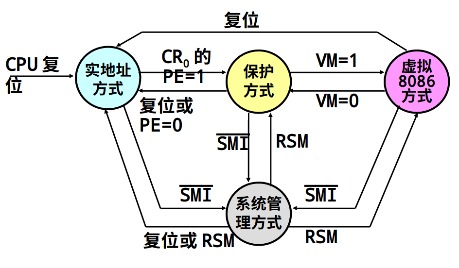

参考教材 附注 1： Intel 系列微处理器的 3 种工作模式
Intel 系列处理器的发展历程
Intel 系列处理器主要的发展从 8080，8086/8088，80186，80286，80386，80486，Pentium 再到现在的 Core i 时代。
8086/8088 系列中，只是略有区别的两个功能相同的 CPU，8088 被 IBM 用在了它所生产的第一台微机上，事实上这台微机成为了日后微机的基本结构。
80386 是第二个重要的型号，在这一时期人们期望在微机上构造可靠的多任务操作系统，这样可以实现在自己的 PC 上同时稳定地运行多个程序，或者能够运行 UNIX 这一类多用户操作系统。 8086/8088 并不具备任何多任务特性，于是 Intel 开发了 80286，虽然加入了多任务支持，但对 8086/8088 的应用兼容性非常差，这妨碍了用户使用之前所使用的应用程序。 IBM 在此时为 80286 开发了多任务系统 OS/2. 后来，80386 横空出世，解决了这一问题。
80386 的工作模式
80386 相对完善地实现了对多任务操作系统的支持，也向下兼容了 8086/8088 处理器上的应用软件。80386 可以工作在三种模式之下，这正是我们今天所将要介绍的。
- 实模式：将 CPU 工作在 8086 环境下，简单片面的说即只提供 16 Bits 数据总线、20 Bits 地址总线和极少部分指令集。
- 关于保护模式，相对更加详细的内容我们之前已经介绍过，请参考 2.2 汇编基础：CPU 寻址
- 虚拟 8086 模式：可以从 保护模式 切换至其中一种 8086 工作方式，这种方式的提供可以供用户方便的在保护模式下运行一个或多个原 8086 程序。
虚拟 8086 模式的提供是有极大意义的，这意味着你不需要重启计算机就能使计算机同时运行 DOS 的程序 和 Windows 的程序，这样就可以节省用户大量的时间，给应用程序带来相对较好的兼容性。
保护模式
- Windows操作系统和基于IA-32处理器的Linux操作系统都运行于保护方式
- 全部32根地址线有效，可寻址高达4G字节的物理地址空间
- 支持存储器分段管理和可选的存储器分页管理机制
- 支持虚拟存储器的实现
- 提供完善的保护机制
- 支持操作系统实现多任务管理
- 支持虚拟8086方式（Virtual-8086 mode）
一些现代的 CPU 提供了更多的工作模式
IA-32e Mode：增强模式，Intel EM64T Processor Only (Extended Memory 64 Technology), 即基于 x86 架构的 64 位指令集处理器。
System Management Mode: 一般用户无感知。 更多详情参看 此处
工作模式的切换

一些疑问
或许你会说我们为什么不直接在保护模式下学习汇编语言？学习的过程是循序渐进的，本书主要面向 Intel 在 DOS / Windows-NT 下使用的 MASM，只有先学会基础的，我们才能进一步学习保护模式下的相对复杂的程序运行原理。
我们也在本书的一开始提到过 汇编语言的多种格式 ，我们建议学有余力的用户进一步学习 AT&T 格式的汇编语言。